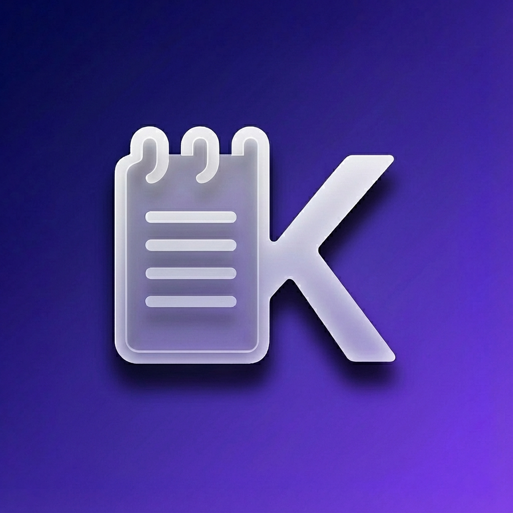
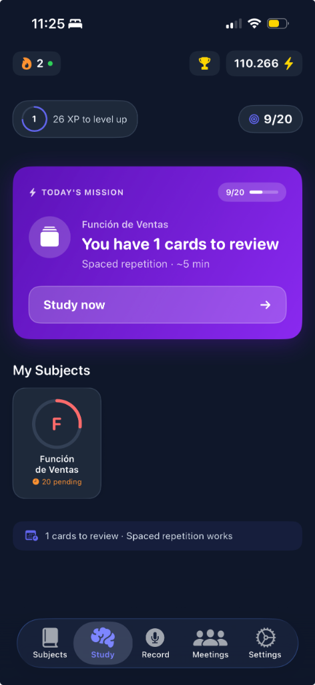
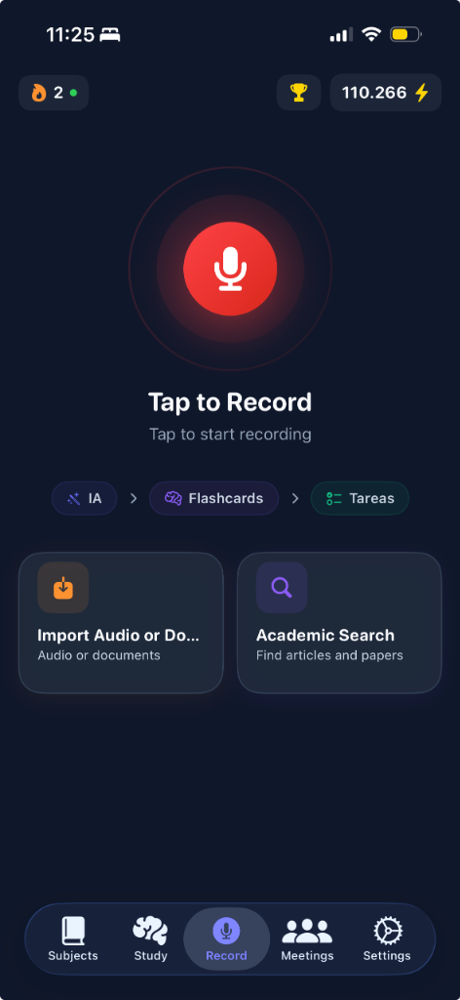
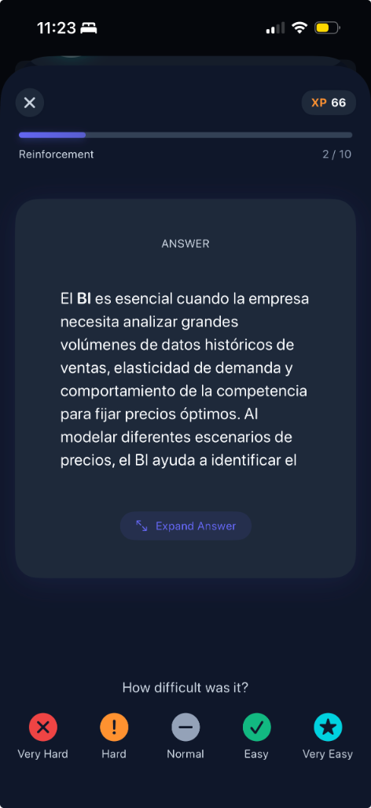
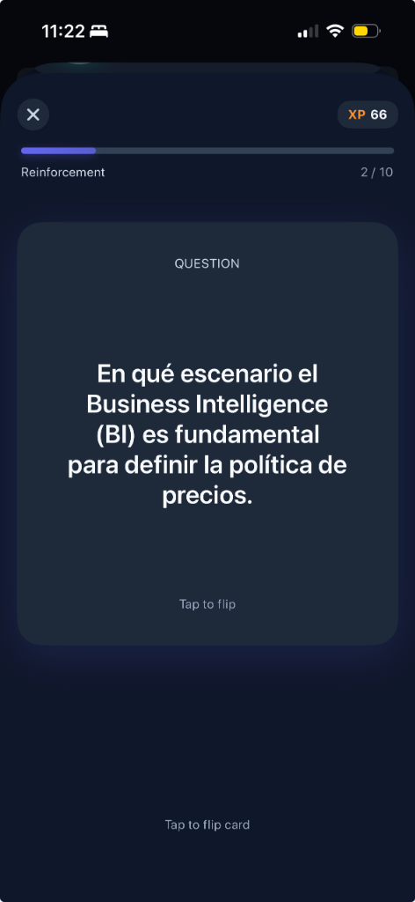
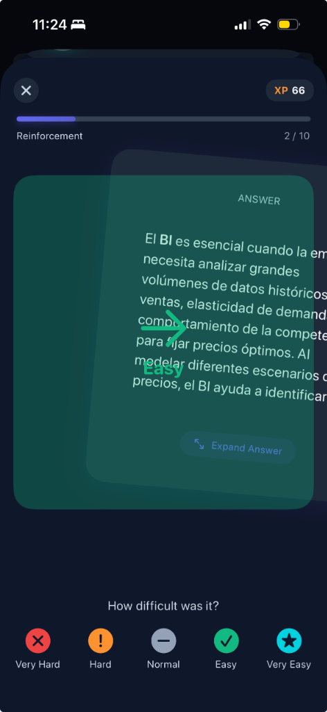

"Estudié horas y no retuve nada"
Releer apuntes crea la ilusión de aprendizaje. Tu cerebro reconoce el texto pero no puede recuperarlo en el examen cuando más importa.

KlasperAIEl método de estudio que los mejores ya usan
KlasperAI convierte cualquier clase, reunión o PDF en flashcards, quizzes, juegos de vocabulario y un plan de repaso — en menos de 60 segundos.
Acceso Beta gratuito. Tu privacidad garantizada.
"No aprendemos de la experiencia... aprendemos al reflexionar sobre la experiencia."
Los estudiantes que más estudian
no siempre son los que más aprenden.
El problema real
El sistema de estudio tradicional no está diseñado para la memoria humana. Este ciclo se repite con el 80% de los estudiantes.
Releer apuntes crea la ilusión de aprendizaje. Tu cerebro reconoce el texto pero no puede recuperarlo en el examen cuando más importa.
Cada día sin procesar el contenido, la curva del olvido hace su trabajo. Recuperar ese material después cuesta el doble del tiempo.
Sin un sistema, el pánico antes del examen te hace saltar entre temas sin profundizar. Estudias mucho y te preparas poco.
La motivación es inconsistente por naturaleza. Un sistema que se adapta a tu ritmo es lo único que garantiza constancia real.
No es falta de inteligencia ni de esfuerzo.
Es falta de un método que funcione para ti.
La solución
Cada feature de KlasperAI existe para eliminar exactamente uno de esos bloqueos. Nada decorativo. Todo funcional.
Sube el audio de tu clase, reunión o el PDF. En menos de 60 segundos obtienes un resumen estructurado y tareas o conceptos clave detectados.
Juegos interactivos de vocabulario por pares (Vocabulary Match) y Flashcards autogeneradas para que tu conocimiento quede fijado a largo plazo.
Tu asistente te indica exactamente qué debes repasar hoy. Mantén tu racha diaria (streak) para no perder el ritmo y evitar la curva del olvido.
Aprender no tiene que ser solitario. Compite en nuestra liga ganando puntos (XP) por cada sesión que completes y lidera el ranking de tu nivel.

Misión diaria, rachas y tus materias en un solo vistazo profesional.

Graba tus clases o importa documentos y deja que la IA haga el trabajo pesado.

Flashcards que se adaptan a tu nivel de dificultad para una retención máxima.
Tu primer día con KlasperAI
Audio de tu clase, reunión o el PDF. KlasperAI soporta los formatos que ya usas. Sin reformatear nada.

En menos de un minuto: recibe un resumen, flashcards, un quiz interactivo y tus tareas pendientes detectadas.

Study Today te marca lo esencial. Gana XP, compite en la liga y sube de rango mientras tu conocimiento se graba a largo plazo.
Por qué funciona
KlasperAI implementa las tres técnicas de aprendizaje con mayor evidencia empírica. No son tendencias. Son décadas de investigación.
Un meta-análisis de 225 estudios con más de 300,000 estudiantes STEM mostró +6% en calificaciones de examen y una reducción del 55% en tasas de reprobación frente a clases magistrales pasivas.
Freeman et al., PNAS 2014 →Revisión de 118 estudios: efecto promedio g = 0.50 consistente en distintos grupos de edad, materias y formatos. Recordar activamente fija más que releer.
Adesope et al., 2017 →Revisión de 317 experimentos independientes: distribuir el repaso en el tiempo mejora la retención de forma consistente frente al estudio en bloque el día anterior.
Cepeda et al., 2006 →| Escenario | Manual | KlasperAI |
|---|---|---|
| De clase a resumen | Horas y formato inconsistente | Automático en < 60 seg |
| Preparación de examen | Repaso pasivo — ilusión de aprendizaje | Flashcards + quizzes + práctica activa |
| Seguimiento diario | Sin sistema de hábito | Study Today + streak + objetivos |
Lo que dicen los primeros beta testers
★★★★★"Antes acumulaba 3 semanas de clases sin tocarlas. La primera semana con KlasperAI procesé todo en 2 horas y entré al parcial con el material dominado. Saqué 8.5 cuando esperaba un 6."
Rodrigo M. Ingeniería Civil · 4to año · Beta iOS
★★★★★"Lo que más me cambió fue el quiz automático. Creía que había entendido el tema hasta que fallé 7 de 10 preguntas. Eso nunca pasa con el subrayado. Me hizo estudiar de verdad."
Valentina S. Medicina · 2do año · Beta iOS
★★★★★"Trabajo y estudio en paralelo. No tengo tiempo para sistemas complicados. KlasperAI hace en 1 minuto lo que yo tardaba 45. Las flashcards son mejores que las que yo hacía a mano."
Daniel R. Administración · Trabaja tiempo completo · Beta iOS
Empieza ahora
Únete a la beta hoy y prueba cualquier plan sin costo. No se te cobrará nada durante este periodo.
Recurso gratuito
El método exacto que aplica KlasperAI, explicado paso a paso. Sin app, sin requisitos. Solo el sistema que funciona.
Ver la guía interactiva gratis →Una guía práctica para convertir temas densos en sesiones de alto impacto.
Recibir por email →Diseña una rutina semanal que priorice comprensión y retención.
Recibir por email →Cómo mantener consistencia sin depender de motivación variable.
Recibir por email →